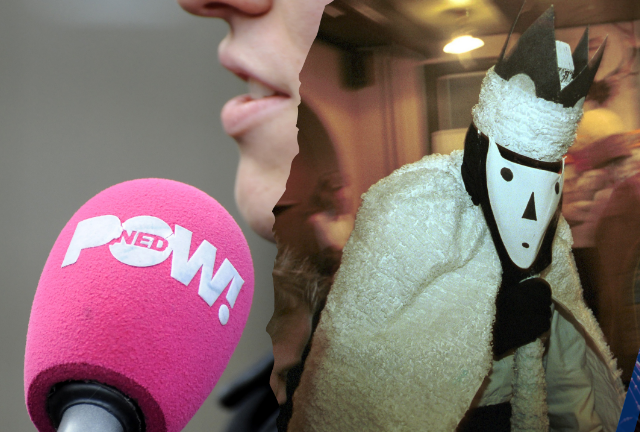
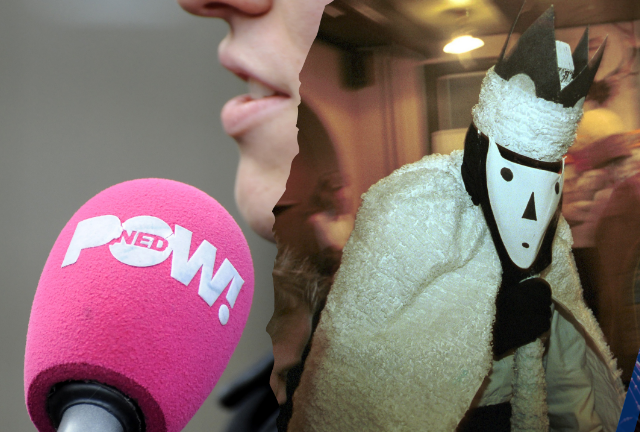

NOS Nieuws - Vandaag, 13:00
Sinterklaas is niet wat het lijkt in Ameland
Een cameraploeg van PowNed is gisteravond belaagd op Ameland omdat zij opnames wilden maken van het sunneklaasfeest. De omroep heeft al aangifte gedaan van de aanval op de journalisten, en gaat nog aangifte doen tegen de politie vanwege nalatigheid.
Bij sunneklaas, een alternatief sinterklaasfeest, verkleden de bewoners van het eiland zich en dragen maskers. Buitenstaanders zijn over het algemeen niet welkom.
Toch besloten de journalisten van PowNed om het feest vast te leggen. Ze namen voor de zekerheid een beveiliger mee. Eenmaal op het eiland werd de ploeg naar eigen zeggen belaagd en achtervolgd in hun auto. De politie laat weten onderzoek te doen naar "een confrontatie tussen twee partijen op Ameland waarbij mogelijk geweld gebruikt is".